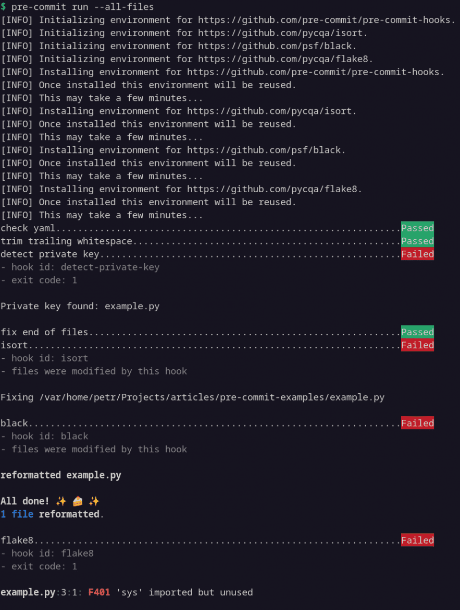
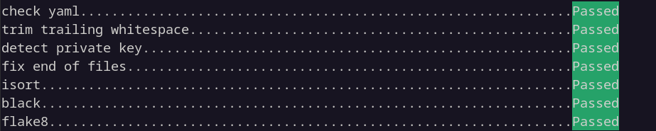

Pohodlná správa zásuvných modulů v Gitu
Nástroj pre-commit je správce zásuvných modulů verzovacího systému Git. V tomto článku si ukážeme základní možnosti jeho použití, konkrétně si vyzkoušíme nastavení stejnojmenného modulu pre-commit.
Článek byl původně zveřejněn na webu root.cz.
K čemu je nástroj pre-commit dobrý
Jednou z užitečných funkcionalit Gitu jsou zásuvné moduly (hooks), které mohou při určitých událostech provádět námi definované akce. Například před vytvořením revize (commit) mohou automaticky spouštět nástroje pro kontrolu, opravu a formátování kódu. Je tak mnohem snazší včas odchytávat některé chyby a dodržovat konvence daného projektu, neboli – slovy Pavla Herouta – udržovat „štábní kulturu“. Šetříme tak čas a úsilí jak sobě tak i lidem, kteří provádějí revizi našeho kódu (code review).
Problém ale nastane ve chvíli, kdy chceme svoje zásuvné moduly sdílet mezi projekty s různou strukturou. Nebo chceme volat program vyžadující instalaci jazyka, který v našem projektu nepoužíváme. Proto vznikl nástroj pre-commit, který umožňuje spravovat celou řadu zásuvných modulů Gitu (tedy nejen modul pre-commit, třebaže se v tomto článku budeme věnovat výhradně jemu) jednoduše a nezávisle na projektu a použitém jazyce.
Poznámka
Alternativními správci jsou například husky, overcommit nebo lefthook. Nicméně ty jsem nezkoušel. Neváhejte se tedy podělit o případné zkušenosti a srovnání v komentářích.
Vezměme praktický příklad: Před vytvořením revize (commit) chceme automaticky zkontrolovat syntax, zbavit se nadbytečných bílých znaků, předejít úniku soukromých klíčů a opravit konce souborů. Náš projekt je napsaný v jazyce Python a soubory připravené k revizi chceme nejprve opravit a zformátovat pomocí nástrojů isort a black, a poté zkontrolovat pomocí flake8. Toto vše tedy nadefinujeme v souboru .pre-commit-config.yaml, nainstalujeme balíček pre-commit a (vyjma konfiguračních detailů) se už o nic dalšího zpravidla nemusíme starat.
Poznámka
Třebaže zde uvádím příklady pro Python, pre-commit podporuje celou řadu programovacích jazyků.
Instalace
Info
Ve zbývající části článku předpokládám, že máme nainstalovaný Git a Python (3.8 a vyšší).
pre-commit lze nainstalovat z pypi.org:
Další možnosti (zipapp, homebrew, conda) jsou popsány v dokumentaci.
Konfigurace
Pro snadné vyzkoušení si naklonujeme repozitář s demonstračními příklady:
Máme zde soubor example.py s několika vadami ve zdrojovém kódu, a soubor .pre-commit-config.yaml, který nám definuje akce popsané v posledním odstavci předchozí kapitoly:
repos:
- repo: https://github.com/pre-commit/pre-commit-hooks
rev: v4.4.0
hooks:
- id: check-yaml # syntax check
- id: trailing-whitespace
- id: detect-private-key
- id: end-of-file-fixer
- repo: https://github.com/pycqa/isort
rev: 5.12.0
hooks:
- id: isort
args: ["--profile", "black"]
- repo: https://github.com/psf/black
rev: 23.3.0
hooks:
- id: black
- repo: https://github.com/pycqa/flake8
rev: 6.0.0
hooks:
- id: flake8
args: ["--max-line-length", "100"]
První akce – neboli plugin nástroje pre-commit – začíná odkazem na repozitář (repo) a označením revize nebo tagu (rev), které chceme nainstalovat. Následuje výčet zásuvných modulů (hooks pro daný plugin), které chceme volat. V našem případě provádět kontrolu syntaxe souborů ve formátu YAML, zbavovat se přebytečných bílých znaků a tak dále.
Poznámka
Kompletní přehled podporovaných zásuvných modulů pro pluginy nalezneme v dokumentaci.
Jak můžeme vidět u pluginu isort, použitým nástrojům můžeme předávat i argumenty (args) jako při volání z příkazové řádky, což se hodí kdybychom chtěli načítat nějaký externí konfigurační soubor, například:
- repo: https://github.com/PyCQA/bandit
rev: 1.7.5
hooks:
- id: bandit
args: ["-c", "pyproject.toml"]
additional_dependencies: ["bandit[toml]"]
Poznámka
Opět, kompletní přehled konfigurace nalezneme v dokumentaci.
Spuštění
Jakmile máme základní konfiguraci hotovou, nainstalujeme pre-commit do našeho gitovského repozitáře:
Nyní se nám při každém vytváření revize (git commit) zavolají vybrané pluginy automaticky. Pokud si chceme funkčnost ověřit bez nutnosti vytvářet novou revizi, jde to udělat následovně:
Info
Bez přepínače --all-files pracuje pre-commit pouze se soubory připravenými k revizi (stage).

Výstup nástroje pre-commit s problémy
Jak můžeme vidět na obrázku, pre-commit odhalil několik problémů. isort a black automaticky opravily řazení importů a formátování. Zapomenutý soukromý klíč (který se v reálu v repozitáři vůbec nesmí objevit) a nepoužitý modul sys odstraníme manuálně. Jakmile jsou problémy opravené, při tvorbě další revize (git commit -a) již všechny kontroly projdou.

Výstup nástroje pre-commit po nápravě
Jednotlivé pluginy a jejich zásuvné moduly lze volat i samostatně, například pouze black (voláme pomocí hodnoty klíče id z konfigurace výše):
Shrnutí a další odkazy
V článku jsme si ukázali jednoduché nastavení a použití správce gitovských zásuvných modulů nazvaného pre-commit. Ten nám může usnadnit automatizaci některých rutinních akcí a ve svém důsledku tak i pomoct k více konzistentnímu a kvalitnějšímu kódu.
V případě, že vás nástroj zaujal, mohl by vás zajímat přehled použití a správa z příkazové řádky, využití v rámci Průběžné integrace (CI) nebo tvorba vlastních zásuvných modulů pro pluginy.
(Autorem obrázků je Petr Beránek.)